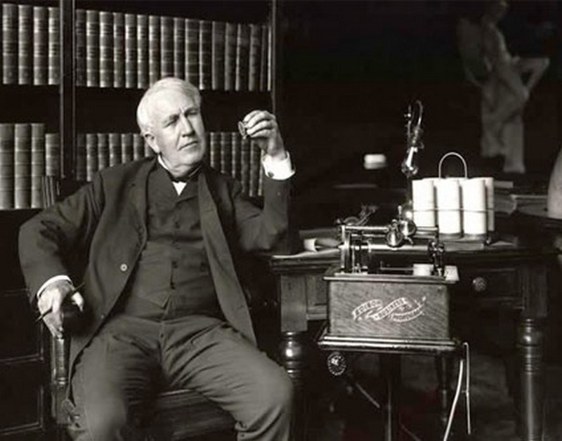

De acuerdo con los hechos históricos, antes de tener la idea,
Edison se inspiró en una visita que hizo a Eadweard Muybridge en 1888,
quien desarrollaba una invención a la que llamó zoopraxiscopio.
Parece ser que la intención de Muybridge era financiar y promover una mayor
colaboración con Edison en la elaboración de un diseño de una máquina que
pudiera emitir sonido y proyectar imágenes a la vez.
En este diseño se incluía el fonógrafo inventado por Edison.
Entonces, Edison, impresionado e inspirado a robar las ideas de Muybridge, rápidamente y curiosamente, registró la patente de una máquina que podría "hacer para los ojos aquello que el fonógrafo hace para los oídos". Asignó la tarea del nuevo diseño a Laurie Dickson, y decidió llamar a "su" invento "quinetoscopio" (kinetoscope), como resultado de la combinación de las palabras griegas kineto (movimiento) y scopos (ver).
Edison, Dickson y otros trabajadores del laboratorio de Edison, realizaron pocos progresos en el diseño, ya que la idea de utilizar cilindros rotativos solamente permitiría proyectar animaciones demasiado cortas, teniendo en cuenta la limitación del diámetro del cilindro. El proyecto quedó paralizado, pero se reemprendió después de una visita de Edison a Etienne-Jules Marey, un médico y fotógrafo francés que había desarrollado un "cronofotógrafo", con el cual utilizaba una tira de película mucho más larga que el diámetro de cualquier cilindro utilizable.
Entonces, Edison, impresionado e inspirado a robar las ideas de Muybridge, rápidamente y curiosamente, registró la patente de una máquina que podría "hacer para los ojos aquello que el fonógrafo hace para los oídos". Asignó la tarea del nuevo diseño a Laurie Dickson, y decidió llamar a "su" invento "quinetoscopio" (kinetoscope), como resultado de la combinación de las palabras griegas kineto (movimiento) y scopos (ver).
Edison, Dickson y otros trabajadores del laboratorio de Edison, realizaron pocos progresos en el diseño, ya que la idea de utilizar cilindros rotativos solamente permitiría proyectar animaciones demasiado cortas, teniendo en cuenta la limitación del diámetro del cilindro. El proyecto quedó paralizado, pero se reemprendió después de una visita de Edison a Etienne-Jules Marey, un médico y fotógrafo francés que había desarrollado un "cronofotógrafo", con el cual utilizaba una tira de película mucho más larga que el diámetro de cualquier cilindro utilizable.